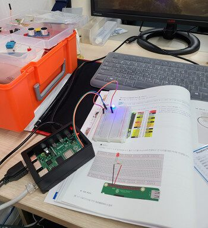

저는 스마트인재개발원 인공지능과정을 수료한 수료생입니다!
처음에 개발원에 왔을 때만 해도 잘 적응할 수 있을지, 수업을 잘 따라갈 수 있을지 고민이 많았는데 걱정할 필요 없었던 것 같아요!!
같이 수료한 친구들과 매일같이 보고 공부하다 보니까 금방 친해질 수 있었고 그래서 적응도 더 빨리 할 수 있었어요!
수료한 후에도 같은 분야를 공부하면서 고민을 나눌 수 있는 친구들이 생겨서 너무 좋은 기회였다고 생각해요!
또 선생님들도 다들 너무 친절하셔서 모르는 부분을 편하게 질문할 수 있어서 생각보다 실력도 빨리 늘었던것같아요!!
남구에있어서 너무 멀었던게 단점이라고 할 수 있는데 이제는 동구에도 생겨서 더 많은 사람들이 편하게 다닐 수 있을 것 같아요!!
아, 그리고 수료한 후에도 취업연계해주시려고 연락을 꾸준히 해주시는데 그것도 너무 좋은점같아요,,!!
수료생으로서 스마트인재개발원 정말 추천이에욧!! ?
